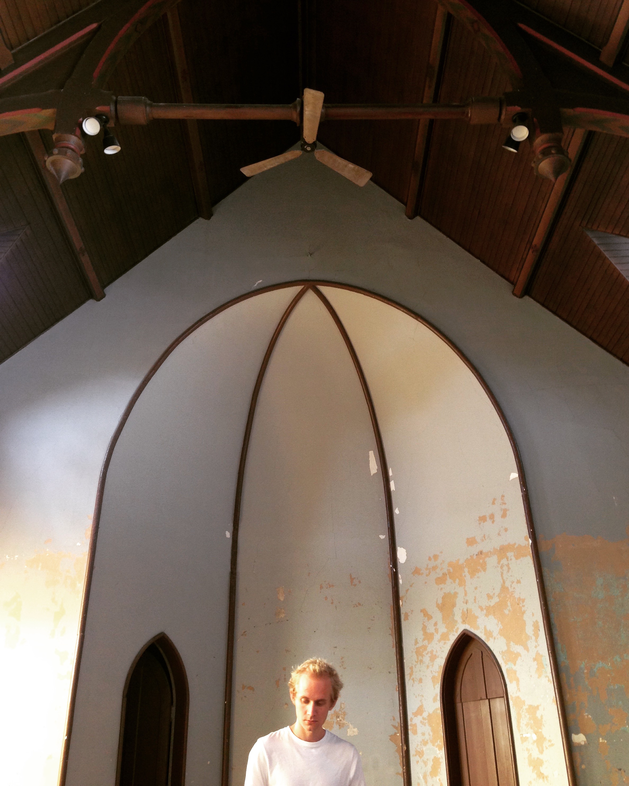

---
# Feel free to add content and custom Front Matter to this file.
# To modify the layout, see https://jekyllrb.com/docs/themes/#overriding-theme-defaults

layout: home
---
<div class="post-content" style="width: 90%; margin:auto;">
<div style="text-align: center; max-width: 400px; margin:auto;">

  

</div>

</div>
<br><br>
<br>
<div class="lineacross"> </div>
